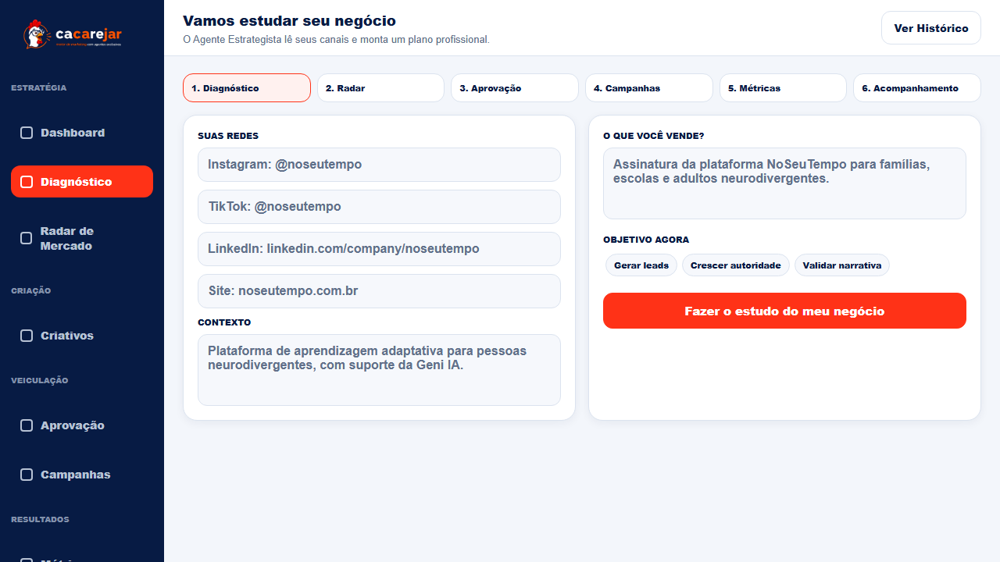
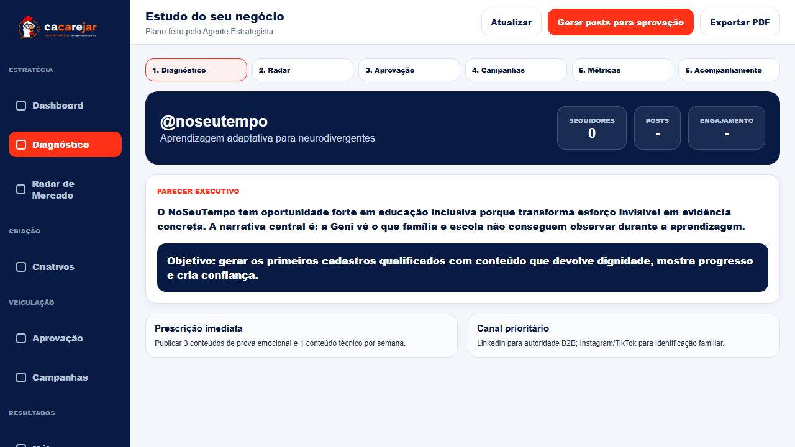
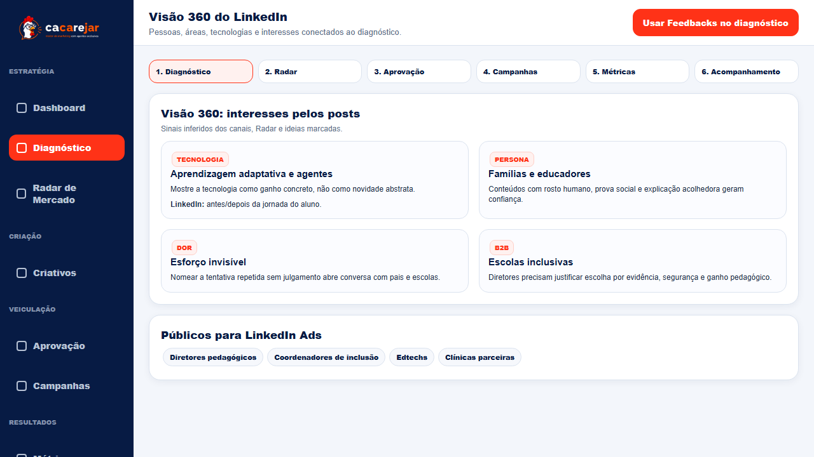
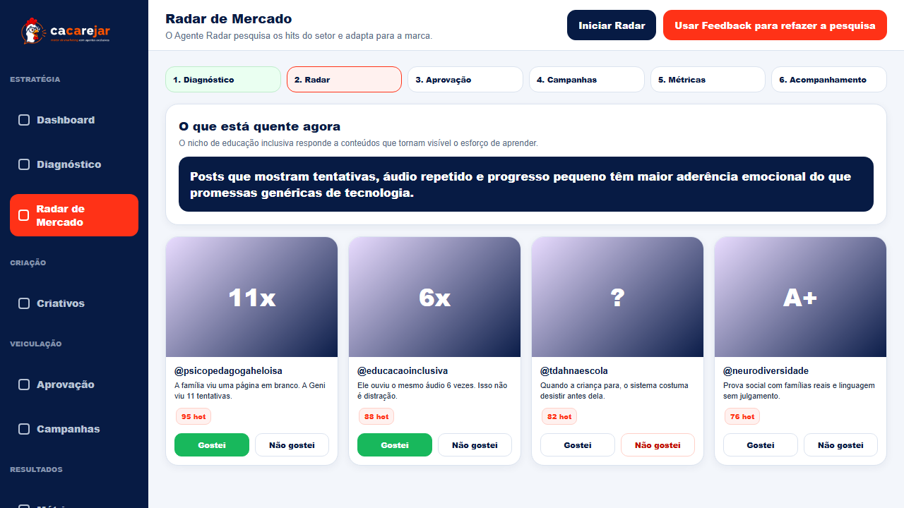
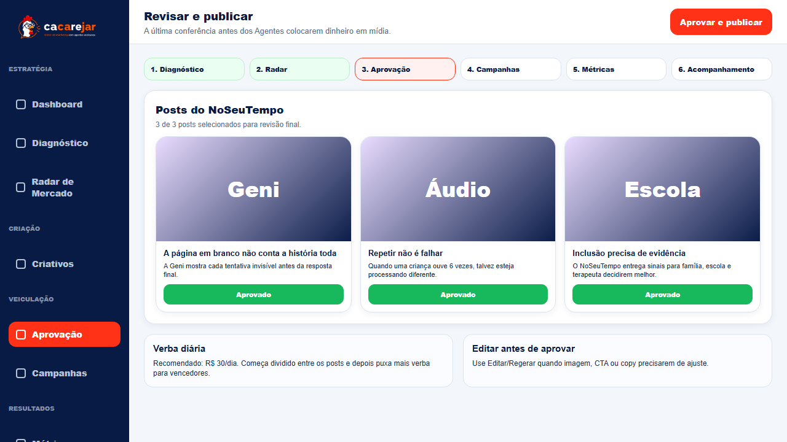
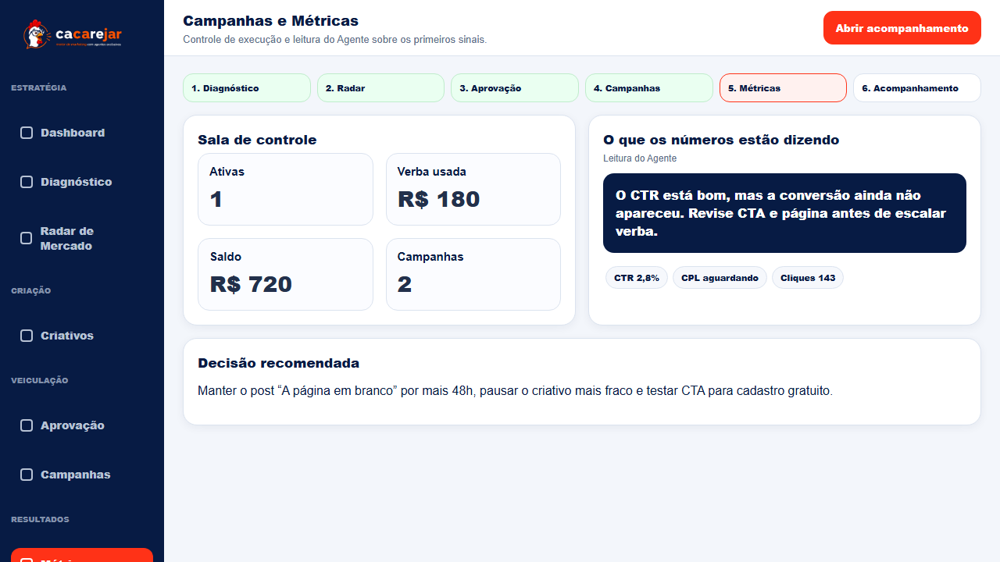
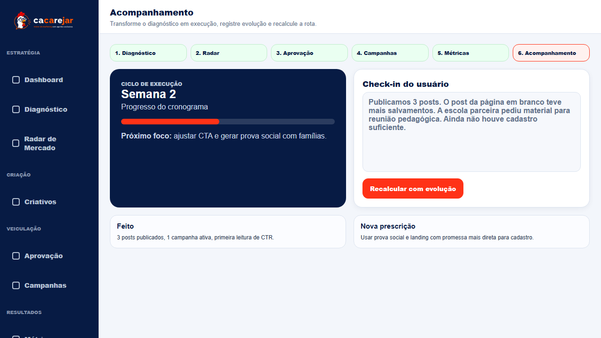

Manual do usuário com exemplo prático
Como usar o Cacarejar do diagnóstico ao acompanhamento
Passo a passo visual usando o NoSeuTempo como cliente modelo.
Objetivo do manual: mostrar como um usuário preenche os canais, interpreta o diagnóstico, ensina o Radar, aprova posts, acompanha métricas e recalcula a rota.
História exemplo
O NoSeuTempo é uma plataforma de aprendizagem adaptativa para pessoas neurodivergentes. A jornada abaixo simula um usuário usando o Cacarejar para transformar canais digitais, Radar de Mercado e feedbacks em conteúdo, campanha e aprendizado.
| Entrada | Exemplo usado no manual |
|---|
| Instagram/TikTok | @noseutempo |
| LinkedIn | linkedin.com/company/noseutempo |
| Site | noseutempo.com.br |
| Produto | Plataforma de aprendizagem adaptativa com suporte da Geni IA. |
| Objetivo | Gerar leads, criar autoridade e validar narrativa para famílias, escolas e parceiros. |
Como pensar o fluxo: Diagnóstico cria a estratégia. Radar traz evidência de mercado. Aprovação transforma isso em execução. Métricas e Acompanhamento fecham o ciclo para melhorar a próxima decisão.
1. Preencher o diagnóstico
O NoSeuTempo informa canais e contexto do negócio para o Agente Estrategista cruzar as referências.

2. Ler o parecer e a prescrição
O resultado separa análise estratégica, objetivo, prioridades e ações por canal.

3. Explorar a Visão 360
Para LinkedIn e B2B, a plataforma identifica públicos, áreas, tecnologias e interesses acionáveis.

4. Ensinar o Radar com feedbacks
O usuário marca posts úteis com Gostei e remove ruído com Não gostei antes de refazer a pesquisa.

5. Aprovar posts e verba
Os posts gerados ficam em Aprovação com opção de editar/regerar e definir verba diária.

6. Ler campanhas e métricas
Campanhas mostra execução; Métricas mostra reação do mercado e próxima decisão recomendada.

7. Registrar evolução
Acompanhamento transforma execução em aprendizado e recalcula a rota com dados reais.

Checklist para repetir com outro cliente
- Preencher todos os canais disponíveis.
- Confirmar se o perfil ativo é o cliente correto.
- Ler o parecer antes de gerar posts.
- Atualizar o Radar para o nicho certo.
- Marcar Gostei/Não gostei em posts, não só em perfis.
- Usar feedbacks do Radar no Diagnóstico.
- Editar/regerar posts antes de aprovar.
- Definir verba diária conscientemente.
- Checar métricas antes de escalar.
- Registrar check-in e recalcular a rota.